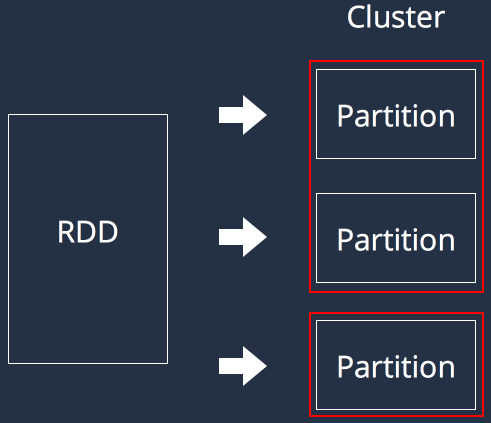
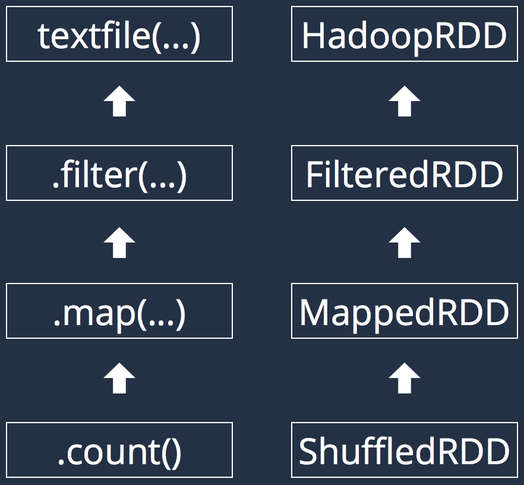
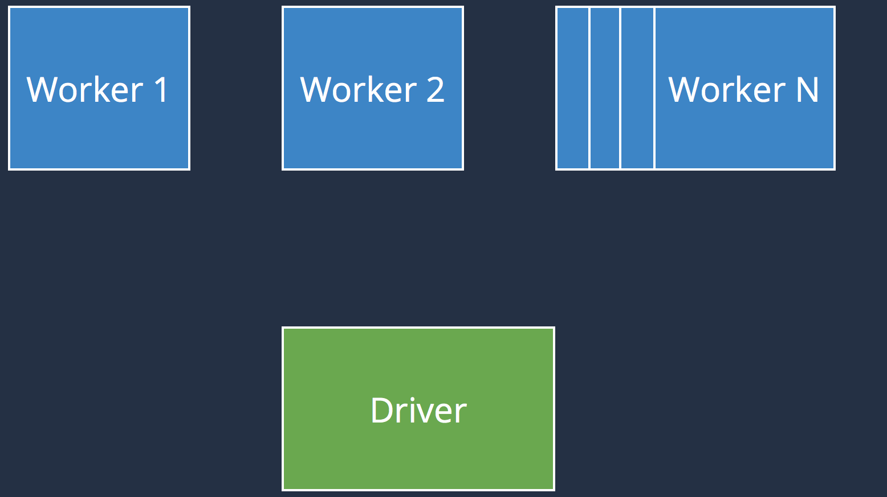
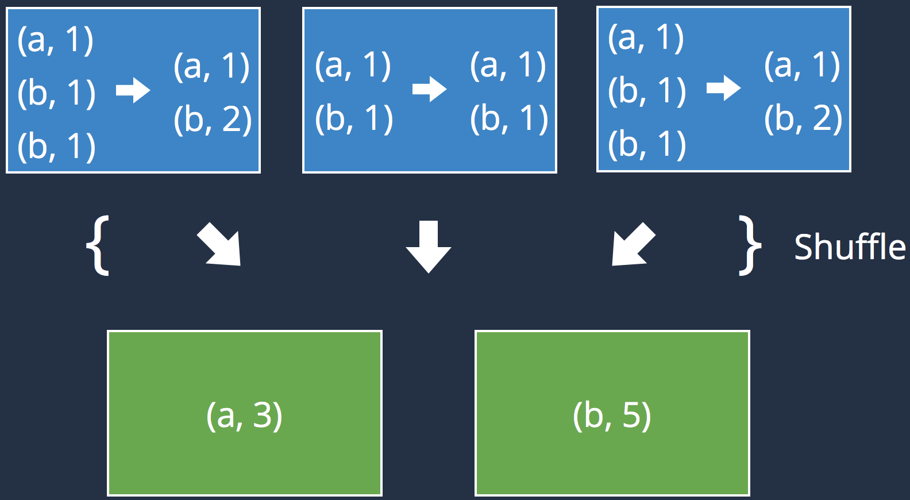

Disclaimer
- I'm no Spark guru
- This is a quick crash course
- Stop me whenever you feel lost
Quick overview
- Created in 2009
- Large-scale data processing engine
- Created in 2009
- Large-scale data processing engine
- Unified framework
- Extremely effective
- Created in 2009
- Large-scale data processing engine
- Unified framework
- Extremely effective
- Popular
Agenda

Spark Architecture


Resilient Distributed Dataset

- val conf = new SparkConf()
- val parCollection = sc.parallelize(Array(1, 2, 3, 4))
- val distFile = sc.textFile("hdfs://...")
Transformations
val wordOccurrences = distFile
.flatMap(_.split(" "))
.map((_, 1))
.reduceByKey(_ + _)wordOccurrences.collect() // returns Array[(String, Int)]
wordOccurrences.saveAsTextFile("...") //
wordOccurrences.count()
wordOccurrences.take(4)RDD : Lineage

scala> wordOccurrences.toDebugString
(4) MapPartitionsRDD[16] at map at <console>:26 []
| ShuffledRDD[15] at reduceByKey at <console>:26 []
+-(4) MapPartitionsRDD[14] at map at <console>:26 []
| MapPartitionsRDD[13] at flatMap at <console>:26 []
| ParallelCollectionRDD[0] at parallelize at <console>:23 []RDD : Persistence and Caching
val result = input.map(x => x*x)
println(result.count())
// RDD will be recomputed here
println(result.collect().mkString(","))import org.apache.spark.storage.StorageLevel
val result = input.map(x => x * x)
result.persist(StorageLevel.DISK_ONLY)
println(result.count())
// RDD won' be recomputed here
println(result.collect().mkString(","))val result = input.map(x => x*x)
println(result.count())
// RDD will be recomputed here
println(result.collect().mkString(","))import org.apache.spark.storage.StorageLevel
val result = input.map(x => x * x)
result.persist(StorageLevel.DISK_ONLY)
println(result.count())
// RDD won' be recomputed here
println(result.collect().mkString(","))// Use default storage level (MEMORY_ONLY)
result.cache()result.unpersist()| Level | Space | CPU | RAM | Disk |
| MEMORY_ONLY | High | Low | Y | N |
| DISK_ONLY | Low | High | N | Y |
| MEMORY_AND_DISK | High | Medium | Some | Some |
| MEMORY_ONLY_SER* | Low | High | Y | N |
| MEMORY_AND_DISK_SER* | Low | High | Some | Some |
| (*) : Data is serialized before being persisted (takes less space) | ||||
RDD : Execution
- val output = sparkContext
- .textFile("hdfs://...")
- .flatMap(_.split(" "))
- .map((_, 1))
- .reduceByKey(_ + _)
- .collect()
- print output
- val output = sparkContext
- .textFile("hdfs://...")
- .flatMap(_.split(" "))
- .map((_, 1))
- .reduceByKey(_ + _)
- .collect()
- print output
Executed on the driver
- val output = sparkContext
- .textFile("hdfs://...")
- .flatMap(_.split(" "))
- .map((_, 1))
- .reduceByKey(_ + _)
- .collect()
- print output
Executed on the driver
Executed on the executors
Executed on the executors
- val output = sparkContext
- .textFile("hdfs://...")
- .flatMap(_.split(" "))
- .map((_, 1))
- .reduceByKey(_ + _)
- .collect()
- print output
Executed on the driver
Executed on the executors
May return a value to the Driver
Executed on the executors
May return a value to the Driver


- var counter = 0
- var rdd = sc.parallelize(data)
- rdd.foreach { rddItem => counter += 1 }
- print("Counter value: " + counter)
- var counter = 0
- var rdd = sc.parallelize(data)
- rdd.foreach { rddItem => counter += 1 }
- print("Counter value: " + counter)
RDD : Recap
- Spark = driver + executors
- RDD is an immutable distributed collection
- An RDD supports Transformations and Actions
- Spark = driver + executors
- RDD is an immutable distributed collection
- An RDD supports Transformations and Actions
- An RDD's lineage is a sequence of ransformation
- An RDD can be persisted for caching purpose
- Watch out for an RDD's execution (Driver vs. Executors)
Shared variables
var counter = 0
var rdd = sc.parallelize(data)
rdd.foreach { rddItem => counter += 1 }
print("Counter value: " + counter)var counter = 0
var rdd = sc.parallelize(data)
rdd.foreach { rddItem => counter += 1 }
print("Counter value: " + counter)val hugeArray = ...
var bigRddWithIndex = ...
bigRddWithIndex.map { rddItem => hugeArray[rddItem.key] }
...var counter = 0
var rdd = sc.parallelize(data)
rdd.foreach { rddItem => counter += 1 }
print("Counter value: " + counter)val hugeArray = ...
var bigRddWithIndex = ...
bigRddWithIndex.map { rddItem => hugeArray[rddItem.key] }
...Accumulators and Broadcast variables !
Accumulators
|
 |
| Accumulators aggregate values coming from the executors to the driver | |
Broadcast variables
|
 |
| Broadcast variables propagate a read-only value to all executors | |
| Accumulators : |
|
| Broadcast variables : |
|
Spark execution plan

- Definition of a DAG
- An action is called
- The DAG is translated to an execution plan
- Optimizations (pipeline)
- Tasks are created, scheduled and executed
Shuffling
|
 |
|
 |
 |
|
|
 |
|
 |
|
| Recommendations : |
|
Conclusion
- Learning Spark : by Andy Konwinski, Holden Karau, and Patrick Wendell
- Advanced Analytics with Spark : by Josh Wills, Sandy Ryza, Sean Owen, and Uri Laserson
- Introduction to Apache Spark : by Paco Nathan
Spark's high-level APIs
Spark SQL
- Released in February 2015
- Structured dataset querying through SQL
- Integrates with Hive, Parquet, JSon...
- Supports most of Hive's feature

import org.apache.spark.sql.hive.HiveContext
val hiveCtx = new HiveContext(new SparkContext(...))import org.apache.spark.sql.SQLContext
val sqlCtx = new SQLContext(new SparkContext(...))val dataframe = sqlCtx.createDataFrame(rdd)val dataframe = hiveCtx.jsonFile(inputFile)scala> dataframe.show()
root
|-- foo: struct (nullable = true)
| |-- waldos: array (nullable = true)
| | |-- element: string (containsNull = false)
|-- bar: boolean (nullable = true)
|-- qux: string (nullable = true)input.registerTempTable("foobar")
val foobarz = hiveCtx.sql("SELECT * FROM foobar ORDER BY qux LIMIT 10")foobarz.select(...).filter(...).groupBy(...)
foobarz.rdd.filter(...).map(...)
Spark Streaming
- Released in 2013
- Very stable and robust
- Real-Time analytics API
- Trendy

// Boilerplate
val conf = new SparkConf()
.setMaster("local[2]").setAppName("NetworkWordCount")
val ssc = new StreamingContext(conf, Seconds(1))
// Create a DStream listening on port 9999
val lines: DStream[String] = ssc.socketTextStream("localhost", 9999)
lines.flatMap(_.split(" "))
.map(word => (word, 1))
.reduceByKey(_ + _)
.print()
ssc.start() // Start the computation
ssc.awaitTermination() // Wait for the computation to terminate| Fault-tolerance : |
|

Spark APIs : What's left ?
| Spark ML : |
|
| GraphX : |
|